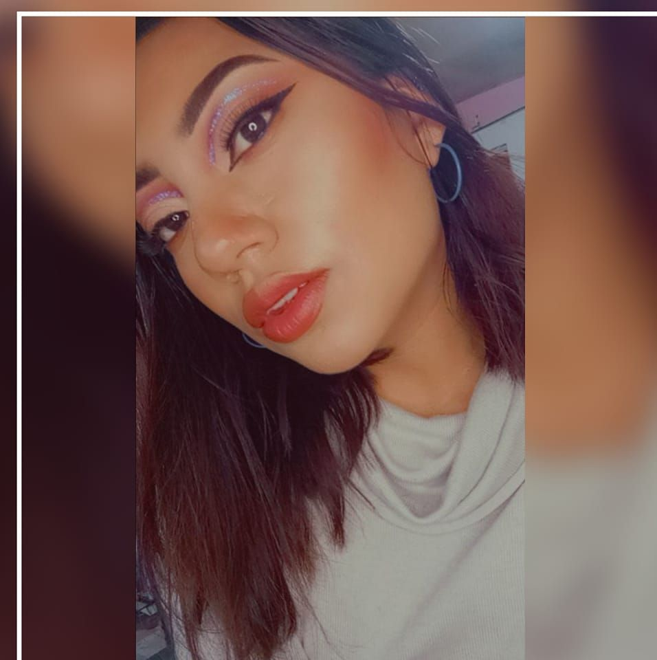

¡Hola soy Adriana!Me caracteriso por ser una persona de caracter Fuerte, Socialble, Puntual, Responsable
|
 |

Mis amigosLlegue a tener la oportunidad de conocer a varias personas maravillosas, mi circulo social se a basa en amigos que eh conocido durante el transcurso de mi vida, redes sociales, por conocidos, la universidad, por experiencias. durante el corto lazo de mi vida tambien eh aprendido a saber con quien puedo contar y con quien no. |
|
Mis Amigas Salome & Jomi |
Mi leal Joel |
Mis amigos Jean & Monse |